3.3 Double Integrals Over General Regions
Suppose that \(D\) is a bounded region then \(D\) can be enclosed in a rectangular region.
We define a new function \(F(x,y)\) with domain \(R\).
\[ F(x,y) = \begin {cases} f(x,y) , & \text {If}\hspace {0.2cm} (x,y)\in D\\\\ 0 , & \text {If} \hspace {0.2cm} (x,y)\not \in D\\ \end {cases} \]
If the double integral exist over \(R\), then we define the double integral of \(f\) over \(D\) by \[\iint \limits _D f(x,y)\hspace {0.1cm}dA = \iint \limits _R F(x,y)\hspace {0.1cm}dA\]
A plane region \(D\) is said to be type I if it lies between the graphs of two continuous functions of \(x\) \[ D = \big \{ (x,y)\hspace {0.1cm} \big |\hspace {0.1cm} a \leq x \leq b \hspace {0.1cm} , \hspace {0.1cm} g_1(x) \leq y\leq g_2(x)\big \}\] where \(g_1(x)\) and \(g_2(x)\) are continuous on \([a,b]\).
| 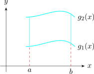 | 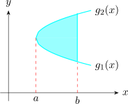 |
To evaluate \(\displaystyle {\iint \limits _D f(x,y)\hspace {0.1cm}dA}\) when \(D\) is a type I region, we choose rectangle \(R = [a,b] \times [c,d]\) that contains \(D\).
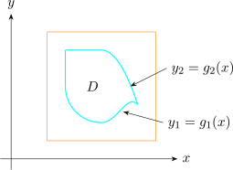
\begin {align*} \iint \limits _D f(x,y)\hspace {0.1cm} dA & = \iint \limits _R F(x,y)\hspace {0.1cm}dA\\ & = \int ^b_a\int ^d_c F(x,y)\hspace {0.1cm} dy \hspace {0.1cm}dx\\ \end {align*}
Note \(F(x,y) = 0 \hspace {0.4cm} y<g_1(x) \hspace {0.2cm} , \hspace {0.2cm} y>g_2(x)\) \begin {align*} \int ^d_c F(x,y)\hspace {0.1cm}dy & = \int ^{g_2(x)}_{g_1(x)} F(x,y)\hspace {0.1cm}dy\\ & = \int ^{g_2(x)}_{g_1(x)} f(x,y)\hspace {0.1cm}dy\\ \end {align*}
because \(F(x,y) = f(x,y)\) when \(g_1(x) \leq y \leq g_2(x)\). If \(f\) is continuous on \(\textit {type I}\) region \(D\) such that \(D = \big \{ (x,y)\hspace {0.1cm} \big |\hspace {0.1cm} a\leq x \leq b \hspace {0.1cm} , \hspace {0.1cm} g_1(x)\leq y\leq g_2(x)\big \}\hspace {0.2cm}\) then \[\iint \limits _D f(x,y)\hspace {0.1cm}dA = \int ^b_a\int ^{g_2(x)}_{g_1(x)} f(x,y)\hspace {0.1cm}dy\hspace {0.1cm}dx\]
Consider plane regions of \(\textit {type II}\) which can be expressed as \[D = \big \{ (x,y)\hspace {0.1cm} \big |\hspace {0.1cm} c\leq x \leq d \hspace {0.1cm} , \hspace {0.1cm} h_1(x)\leq y\leq h_2(x)\big \}\] Where \(h_1\) and \(h_2\) are continuous \[\iint \limits _D f(x,y)\hspace {0.1cm}dA = \int ^d_c\int ^{h_2(x)}_{h_1(x)} f(x,y)\hspace {0.1cm}dx\hspace {0.1cm}dy\]
| 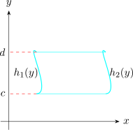 | 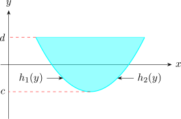 |
Evaluate \(\displaystyle {\iint \limits _D (x + 2y)\hspace {0.1cm}dA}\) where \(D\) is the region bounded by the parabolas \(y = 2x^2\) and \(y = 1 + x^2\).
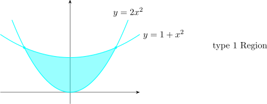
\begin {align*} \iint \limits _D (x + 2y)\hspace {0.1cm}dA & = \int ^1_{-1}\int ^{1 + x^2}_{2x^2} \big (x + 2y\big )\hspace {0.1cm}dy\hspace {0.1cm}\\ & = \int ^1_{-1}\big (-3x^4 - x^3 + 2x^2 + x + 1\big )\hspace {0.1cm}dx\\\\ & = \frac {32}{5}\\\\ \end {align*}
Find the volume of the solid that has under the paraboloid \(z = x^2 + y^2\) and above the region \(D\) in the \(xy-\)plane bounded by the line \(y = 2x\) and the parabola \(y = x^2\).
\[D = \big \{ (x,y)\hspace {0.1cm}\big |\hspace {0.1cm} 0 \leq x\leq 2\hspace {0.1cm} , \hspace {0.1cm} x^2 \leq y \leq 2x\big \}\]
Therefore the volume under \(z = x^2 + y^2\) and above \(D\).
\begin {align*} V & = \iint \limits _D \big (x^2+y^2\big )\hspace {0.1cm}dA\\ & = \int ^2_0\int ^{2x}_{x^2}\big (x^2 + y^2\big )\hspace {0.1cm}dy \hspace {0.1cm}dx\\ & = \int ^2_0\Bigg ( \frac {-x^6}{3} -x^4 +\frac {14 x^3}{3}\Bigg )\hspace {0.1cm} dx\\\\ & = \frac {216}{35}\\\\ \end {align*}
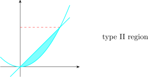
\[y = 2x \implies x = \frac {y}{2}\]
\[y = x^2 \implies x = \pm \sqrt {y}\]
\[D = \big \{(x,y)\hspace {0.1cm}\big |\hspace {0.1cm} 0\leq y\leq 4\hspace {0.1cm},\hspace {0.1cm} y/2\leq x \leq \sqrt {y}\big \}\]
\begin {align*} V & = \iint \limits _D \big (x^2+y^2\big )\hspace {0.1cm}dA\\ & = \int ^4_0\int ^{\sqrt {y}}_{y/2}\big (x^2 + y^2\big )\hspace {0.1cm}dx \hspace {0.1cm}dy\\ & = \int ^4_0\Bigg (\frac {y^{3/2}}{3} + y^{5/2} - \frac {y^3}{24} - \frac {y^3}{2}\Bigg )\hspace {0.1cm} dy\\\\ & = \frac {216}{35}\\\\ \end {align*}
Evaluate \(\displaystyle {\iint \limits _D xy\hspace {0.1cm}dA}\) where \(D\) is the region bounded by \(y = x -1\) and \(y^2 = 2x + 6\).
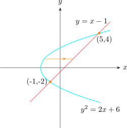
-
- (a)
- \(D\) as type I
- (b)
- \(D\) as type II region.
Solution. \begin {align*} (b)\hspace {2cm} \iint \limits _D xy\hspace {0.1cm} dA & = \int ^4_{-2}\int ^{y+1}_{1/2(y^2-6)}xy\hspace {0.1cm}dx\,dy\\ & = \int ^4_{-2}\Bigg (\frac {-y^5}{4} + 4y^3 + 2y^2 - 8y\Bigg ) \hspace {0.1cm}dy\\ & = 36\\ \end {align*}
\((a)\hspace {0.6cm}\) NB If \(D\) is taken as type I, then \begin {align*} \iint \limits _D xy\hspace {0.1cm} dA = \int ^{-1}_{-3}\int ^{\sqrt {2x + 6}}_{-\sqrt {2x + 6}}xy \hspace {0.1cm}dx\,dy + \int ^{5}_{-1}\int ^{y=\sqrt {2x + 6}}_{y = x -1}xy \hspace {0.1cm}dy\,dx\\\\ \end {align*}
Find the volume of the tetrahedron bounded by the planes \(x + 2y + z = 2.\)
\(x = 2y\hspace {0.3cm} , \hspace {0.3cm} x = 0\hspace {0.3cm} , \hspace {0.3cm} z = 0\)
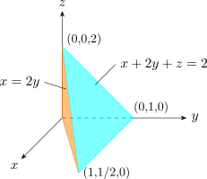
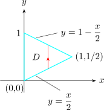
The required volume lies under the graph \(z = 2 - x - 2y\) and above \[D = \Big \{(x,y)\hspace {0.1cm}:\hspace {0.1cm} 0\leq x\leq 1\hspace {0.1cm} ,\hspace {0.1cm} \dfrac {x}{2}\leq y \leq 1 - \frac {x}{2}\Big \}\]
\begin {align*} V & = \iint \limits _D \big ( 2 - x -2y\big )\hspace {0.1cm}dA\\ & = \int ^1_0\int ^{1 -x/2}_{x/2} \big ( 2 - x -2y\big )\hspace {0.1cm}dy\,dx\\ & = \int ^1_0\big (x^2 - 2x + 1\big )\hspace {0.1cm}dx = \frac {1}{3}\\\\ \end {align*}
Evaluate the iterated integral \(\displaystyle {\int ^1_0\int ^1_{x}\sin (y^2)\hspace {0.1cm}dy\,dx}\)
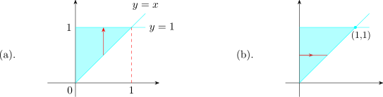
\begin {align*} \int ^1_0\int ^y_{0}\sin (y^2)\hspace {0.1cm}dx\,dy & = \int ^1_0y\sin (y^2)\hspace {0.1cm}dy\\ & = \frac {1}{2}\big (1 - \cos (1)\big )\\\\\\ \end {align*}
Questions on this section
Stuck on something here? Ask below and it stays attached to this topic.